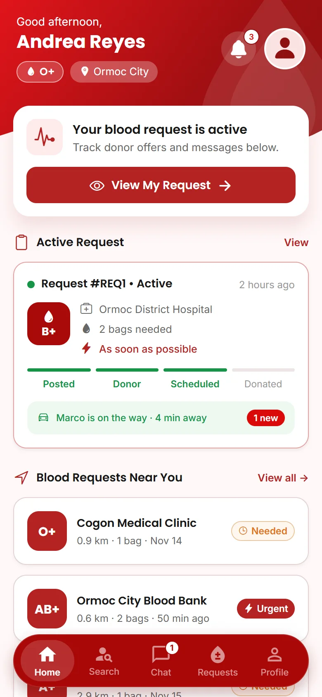
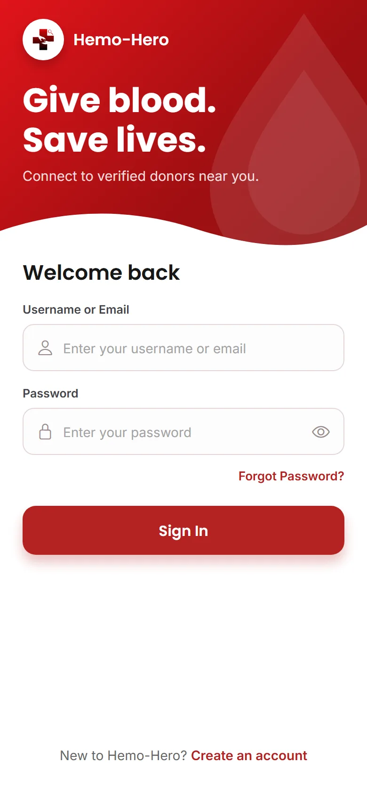
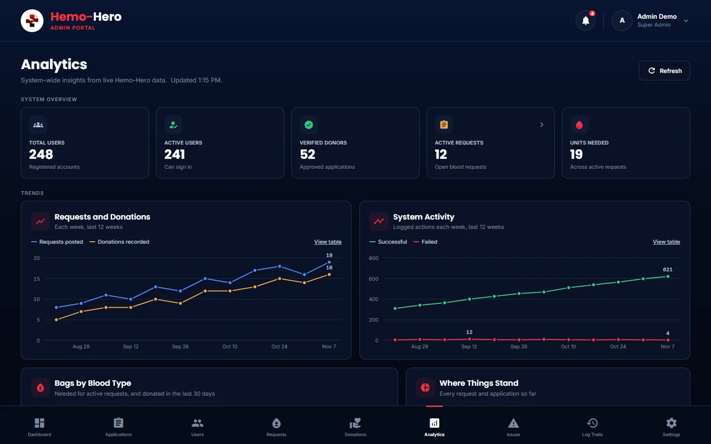

Mobile app + admin portal + API
Hemo Hero
When someone needs blood, Hemo Hero finds nearby donors who have a compatible blood type and are allowed to give again. They chat, agree on a time, and the requester can follow the donor on a live map. Every donor's ID is checked by an admin first.
- apps on one API
- 3
- commits
- 82
- latest release
- 1.2.0
The screenshots and demo are the real app running on made-up sample data. The source code is private, but I'm happy to walk you through it on a call.
Problem
Finding blood fast usually means posting online and calling around, with no easy way to tell whether a donor is compatible, eligible to give again, or verified.
What I built
A mobile app where someone posts an urgent or scheduled request, and nearby donors who can give offer to help. The two of them chat, agree on a time, follow the trip on a live map (OSRM routing) and rate each other afterward. Admins get a separate web portal for checking donor IDs, managing users, and viewing analytics, logs and backups. Both apps run on one Node.js + Express API over Supabase.
Outcome
Released version 1.2.0 after 82 commits, with 25 automated server test files and one version number and changelog shared by all three apps. It runs on Android, iPhone and the web from one codebase, and the server closes expired requests by itself every 30 minutes.